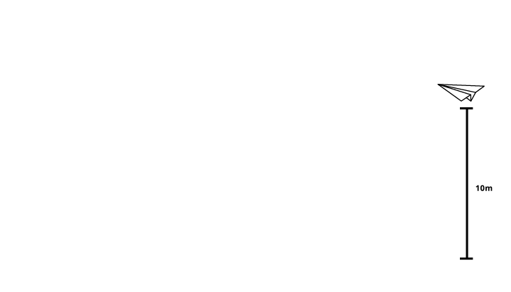

Animations
Video animations
Animations take up a part - or the entirety of - a learning video. They are usually used to visualise abstract or conceptual explanations or to provide a particular experience for telling a story within the module.
These are created in After Effects and incorporated into the video production processes.
Examples
Bard101x: Shakespeare Matters - 'What Happens in Henry V?'
StatTraX: MathTrackX: Statistics - 'Inference'
In-page animations
Conversely, in-page animations take the form of .gifs inside learning pages or native .svg animations placed into a page or interactive.
Examples
DiffTraX: Paper Plane [gif]
Sex101x - The Menstrual Cycle [interactive]
Production
Tools and libraries
We use After Effects for all animation work: video and in-page alike. Graphical elements follow the guidelines found in this guide for illustration and graphics.
To assist in transitions, effects, and text animations, we also use Mr Horse's Adobe Tools
Producing in-page animations
For animations that are not gifs, we use the Lottie toolset. This plugin installs straight into After Effects and provides a means of exporting the animation as a smooth .svg player which can then be uploaded and inserted into a web-page or interactive.
The benefits over .gifs include the ability to run at native framerates (60+ FPS inside the web-page); a much smaller file-size; and a much faster process to export the animation compared to exporting a video then converting to .gif.